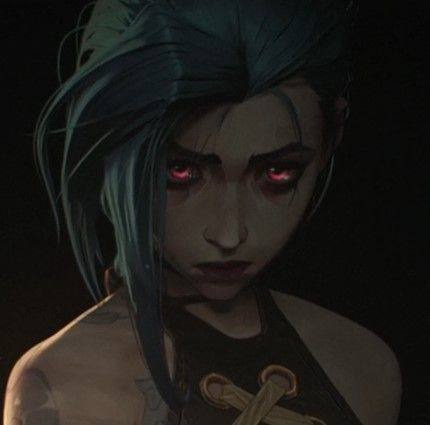
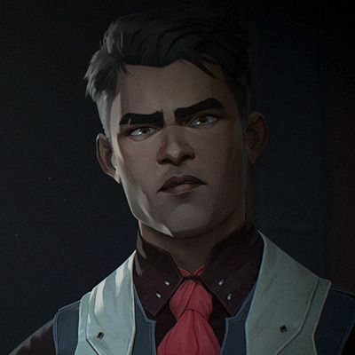
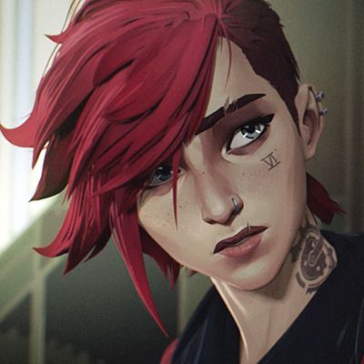
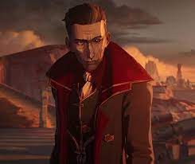
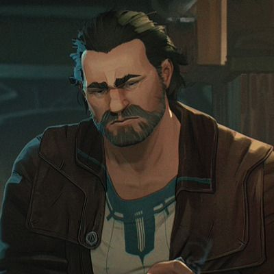
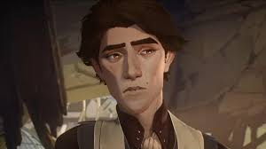
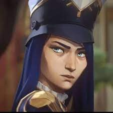

Introducción
Arcane es una serie de animación disponible en Netflix de tan sólo 9 episodios con una duración de entre 40 y 45 minutos. Arcane está basada en algunos de los personajes jugables que forman parte del popular juego de PC, League of Legends, también conocidos como leyendas, teniendo como principales protagonistas a Jinx y Vi, aunque otras leyendas del juego también forman parte de esta historia. Incluso si no eres un jugador habitual de League of Legends puedes disfrutar de este producto. De hecho, yo diría que Arcane es una de esas series que todo el mundo debe ver al menos una vez en su vida.
Personajes
| Foto | Nombre | Descripcion |
|---|---|---|
|  | Jinx | Conocida como Powder antes, es la hermana de Vi, sufre de traumas y es una maniatica. Se destaca por su gran punteria y la facilidad de trabajar y crear diversos aparatos. |
|  | Jayce | Cientifico responsable de controlar la magia en Piltover, dandole el nombre de Hextech. Pasaria a un puesto mas de politico. |
|  | Vi | Originaria de Zaun, hermana de Powder/Jinx, se destaca en el combate cuerpo a cuerpo, |
|  | Silco | La contraparte de Vander, busca el respeto de todo Piltover a traves del miedo, convirto a Powder en Jinx |
|  | Vander | Es el que pone el orden en Zaun, adopto a Powder y a Vi despues de la tragedia del puente, busca que dejen en paz a la gente de Zaun |
|  | Viktor | Cientifico que apoya a Jayce en la creación del Hextech, es el primero que lo apoya y aunque sufre una enfermedad que pone su vida en riesgo quiere dejar una huella en el mundo |
|  | Caitlyn | Hija de una de las consejales, se enlista en la policia de Piltover para intentar hacer un verdadero cambio. Entabla una gran relación con Vi |
Actos
La serie se divide en 3 actos, donde podemos ver la introducción de los personajes, sus motivaciones, su historia, su desarrollo y su impacto en este mundo. El primer acto es maravilloso y narrativamente está perfectamente construido, nos enseñan a cuidar, a querer y a que nos importen los personajes para que luego ellos nos destruyan emocionalmente. Cuando vi este primer acto me cautivó de inmediato y sólo quería saber cómo continuaba esta historia. En el segundo acto nos transportan a varios años hacia el futuro, nos enseñan las consecuencias de lo sucedido en el primer acto, como ha afectado a los personajes y que rumbo tomaron a partir de los hechos ocurridos. Nos muestran los nuevos problemas que hay en la ciudad, tanto en la parte rica y la parte pobre, estos problemas serán resueltos en el último acto de esta primera temporada. En el tercer acto nos dan las resoluciones de todos los problemas que surgieron durante toda esta temporada y nos dejan con la pista puesta para que la siguiente parte de la serie empiece con un problema tal vez incluso más grande que los presentados en esta temporada. A lo largo de los 3 actos podemos ver drama político, tragedia, acción, drama familiar y más.
Aspectos Audiovisuales
El trabajo en los visuales es genial, la animación, los detalles, el uso del color son simplemente perfectos para la serie, algunas escenas que pueden servir como ejemplo son: donde Vander salva a Vi y a Powder en el puente, la escena donde Powder es abandonado por su hermana, la pelea entre Vander y Silco, la pelea entre Vi y Sevika, toda la secuencia ocurrida en el puente en el episodio 7, etc. Lo mejor de todo es que esto es una constante durante todos los episodios de la serie. Cada episodio tiene mínimo un momento donde simplemente con el trabajo audiovisual te puedes quedar con la boca abierta. Hay una frase que dice que cada fotograma es una obra de arte y creo que Arcane es uno de los únicos productos que se puede describir con esa frase. El aspecto de audio en Arcane está realizado de una forma genial, los sonidos siempre están en el momento correcto, están hechos de una forma en la que te ambientan perfectamente con lo que está sucediendo y puedes sentir que estás dentro del mundo de Arcane. Incluso puedes buscar la banda sonora de la serie y escucharla mientras te relajas o haces alguna otra actividad y podrás disfrutarla perfectamente. La canción de la intro "Enemy" fue hecha por Imagine Dragons, también hay un pequeño cameo de la banda dentro de la serie.
Desarrollo de Personaje
Los personajes principales están llenos de vida, se sienten reales y las relaciones entre ellos me encantan. En el aspecto en donde más destacan es en su desarrollo el cual tiene un verdadero sentido. Creo que eligieron a los personajes perfectos para hacer la primera adaptación de una historia basada en el mundo de League of Legends. Uno de los aspectos en los que Arcane es mucho mejor que otras series es en sus personajes secundarios, todos ellos tienen su propia historia, sus propias motivaciones, ninguno de los personajes está en la serie de forma gratuita, tienen una razón para estar ahí. Puedes ver sus emociones a través de sus caras, puedes entender sus comportamientos y empatizar u odiarlos. Todos los personajes de Arcane están escritos con pasión y amor. Su evolución a lo largo de los episodios resulta natural, ninguna de sus acciones es forzada y tienen una explicación clara. No hay buenos y malos en Arcane, lo que veo es gente real haciendo lo mejor en una mala situación y eso no siempre lleva a buen puerto. La atmosfera es impresionante, como está hecha Piltover, ves la ciudad y puedes ver futuro, innovación, gente rica y poder justo lo que significa la ciudad. Y cuando ves Zaun puedes ver pobreza, injusticia, maldad y tristeza un claro opuesto a Piltover. Para mi cada ciudad aparte de ser el lugar de los hechos es como un personaje más en esta historia. La serie estuvo en producción como 6 años y absolutamente valió la pena, no apresuraron la producción y gracias a eso tenemos esta obra maestra. Acaban de anunciar una segunda temporada y no podría estar más emocionado.